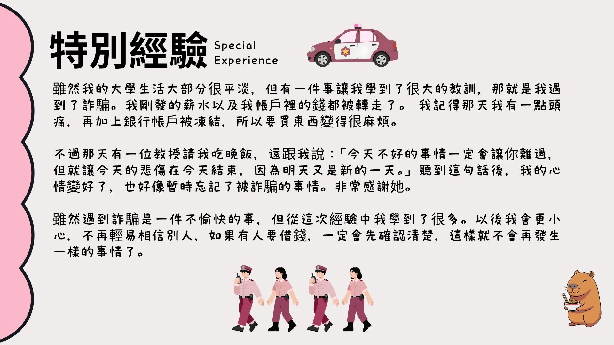

雖然我的大學生活大部分都很平淡，但有一件事讓我學到了很大的教訓，那就是我遇到了詐騙。我剛發的薪水以及我帳戶裡的錢都被轉走了。 我記得那天我有一點頭痛，再加上銀行帳戶被凍結，所以要買東西變得很不方便。
不過那天有一位教授請我吃晚飯，還跟我說：「今天不好的事情一定會讓你難過，但就讓今天的悲傷在今天結束，因為明天又是新的一天。」聽到這句話後，我的心情變好了，也好像暫時忘記了被詐騙的事情。我真的非常感謝她。
雖然遇到詐騙是一件不愉快的事，但從這次經驗中我學到了很多。以後我會更加小心，不再輕易相信別人，如果有人要借錢，一定會先確認清楚，這樣就不會再發生同樣的事情了。
Although most of my college life has been quite ordinary, there was one thing that taught me a very big lesson, which was that I encountered a scam. My salary that I had just received, as well as the money in my bank account, were all transferred away. I remember that day I had a slight headache, and on top of that, my bank account was frozen, so it became very inconvenient to buy things.
However, that day a professor treated me to dinner and said to me: “The bad things that happen today will surely make you sad, but let today's sadness end today, because tomorrow is a new day.” After hearing this, my mood improved, and I also seemed to temporarily forget about the scam. I am really very grateful to her.
Although being scammed is an unpleasant experience, I learned a lot from this incident. In the future, I will be more careful and not easily trust others. If someone wants to borrow money, I will definitely make sure to confirm things clearly first, so that the same thing will not happen again.
| Chinese (中文) | English (英文) |
|---|---|
| 雖然我的大學生活大部分都很平淡 | Although most of my college life has been quite ordinary |
| 但有一件事讓我學到了很大的教訓 | But there was one thing that taught me a very big lesson |
| 那就是我遇到了詐騙 | That was I got scammed |
| 我剛發的薪水以及我帳戶裡的錢都被轉走了 | My salary that I had just received, as well as the money in my bank account, were all transferred away |
| 我記得那天我有一點頭痛 | I remember that day I had a slight headache |
| 再加上銀行帳戶被凍結 | And my bank account was frozen on top of that |
| 所以要買東西變得很不方便 | So it became very inconvenient to buy things |
| 不過那天有一位教授請我吃晚飯，還跟我說 | However, that day a professor treated me to dinner and said to me |
| 今天不好的事情一定會讓你難過 | The bad things that happen today will surely make you sad |
| 但就讓今天的悲傷在今天結束 | But let today's sadness end today |
| 因為明天又是新的一天 | Because tomorrow is a new day |
| 聽到這句話後，我的心情變好了 | After hearing this, my mood improved |
| 也好像暫時忘記了被詐騙的事情 | And I also seemed to temporarily forget about the scam |
| 我真的非常感謝她 | I am really very grateful to her |
| 雖然遇到詐騙是一件不愉快的事 | Although being scammed is an unpleasant experience |
| 但從這次經驗中我學到了很多 | I learned a lot from this experience |
| 以後我會更加小心 | In the future I will be more careful |
| 不再輕易相信別人 | And not easily trust others anymore |
| 如果有人要借錢，一定會先確認清楚 | If someone wants to borrow money, I will definitely make sure first |
| 這樣就不會再發生同樣的事情了 | So that the same thing will not happen again |
Vocabulary List(生詞表)
| Chinese Character (漢字) | Pinyin (拼音) | English (英文) |
|---|---|---|
| 特別 | tèbié | Special / Particular |
| 經驗 | jīngyàn | Experience |
| 雖然 | suīrán | Although |
| 大學 | dàxué | University |
| 生活 | shēnghuó | Life |
| 大部分 | dà bùfèn | Mostly / Most part |
| 平淡 | píngdàn | Ordinary / Plain |
| 一件事 | yí jiàn shì | One thing / An incident |
| 教訓 | jiàoxùn | Lesson / Moral |
| 遇到 | yùdào | Encounter |
| 詐騙 | zhàpiàn | Scam / Fraud |
| 剛發 | gāng fā | Just issued / Just received |
| 薪水 | xīnshuǐ | Salary / Wages |
| 以及 | yǐjí | As well as / And |
| 帳戶 | zhànghù | Account |
| 錢 | qián | Money |
| 都被轉走 | dōu bèi zhuǎn zǒu | All were transferred away |
| 記得 | jìde | Remember |
| 那天 | nà tiān | That day |
| 一點 | yì diǎn | A little bit |
| 頭痛 | tóutòng | Headache |
| 再加上 | zài jiā shàng | In addition / Plus |
| 銀行 | yínháng | Bank |
| 被凍結 | bèi dòngjié | Was frozen |
| 所以 | suǒyǐ | So / Therefore |
| 買 | mǎi | Buy |
| 東西 | dōngxī | Things / Stuff |
| 變得 | biàn de | Become |
| 不方便 | bù fāngbiàn | Inconvenient |
| 不過 | búguò | However |
| 教授 | jiàoshòu | Professor |
| 請我吃晚飯 | qǐng wǒ chī wǎnfàn | Treated me to dinner |
| 跟我説 | gēn wǒ shuō | Told me / Said to me |
| 事情 | shìqíng | Things / Matters |
| 一定 | yídìng | Certainly / Definitely |
| 讓你 | ràng nǐ | Make you / Let you |
| 難過 | nánguò | Sad / Feel bad |
| 悲傷 | bēishāng | Sorrow / Grieved |
| 結束 | jiéshù | End / Finish |
| 因為 | yīnwèi | Because |
| 新的一天 | xīn de yì tiān | A new day |
| 聽到 | tīng dào | Hear |
| 句話 | jù huà | Sentence / Words |
| 後 | hòu | After |
| 心情 | xīnqíng | Mood |
| 變好 | biàn hǎo | Become better |
| 好像 | hǎoxiàng | As if / Seemingly |
| 暫時 | zhànshí | Temporarily |
| 忘記 | wàngjì | Forget |
| 非常 | fēicháng | Very / Extremely |
| 感謝 | gǎnxiè | Grateful / To thank |
| 不愉快 | bù yúkuài | Unpleasant / Unhappy |
| 這次經驗中 | zhè cì jīngyàn zhōng | In this experience |
| 以後 | yǐhòu | In the future / From now on |
| 更加 | gèng jiā | More / Even more |
| 小心 | xiǎoxīn | Careful / Cautious |
| 不再 | búzài | No longer |
| 輕易 | qīngyì | Easily / Lightly |
| 相信 | xiāngxìn | Believe / Trust |
| 別人 | biérén | Other people |
| 如果 | rúguǒ | If |
| 借錢 | jiè qián | Borrow/lend money |
| 先 | xiān | First |
| 確認 | quèrèn | Confirm / Verify |
| 清楚 | qīngchǔ | Clear / Clearly |
| 發生 | fāshēng | Happen |
| 同樣 | tóngyàng | Same / similar |